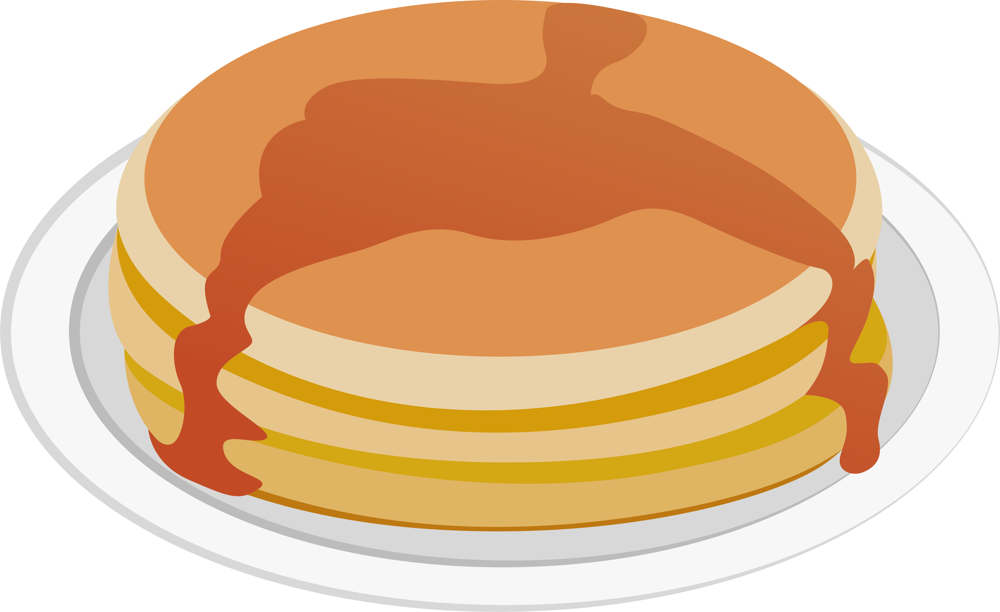
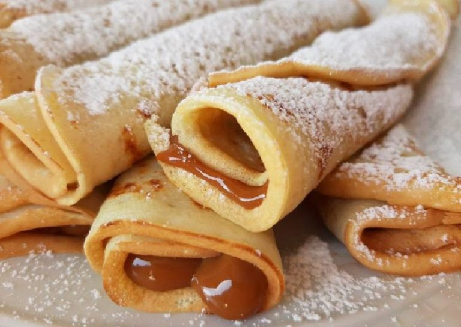

RECETA
Canelones de Verdura
Torre de Panqueques
Panqueques rellenos
Panqueques de Avena
Hoy vamos a hacer unos ricos panqueques :3

Esta receta a continuación sirve para comidas dulces y saladas, pero hoy vamos a hacerlos dulces :3